Common Buckthorn
Background: Common Buckthorn is a deciduous tree/shrub species which was introduced in the late 1800’s as an ornamental from Eurasia (Knight et al. 2007). While it may have served a role in wind erosion as an ornamental, it has done a large amount of ecological harm to the Northeastern United States and South Eastern Canada. For example, Common Buckthorn has been known to more than double nitrogen and organic matter content in soils compared to native vegetation resulting in decreased habitat diversity (Klionsky et al. 2011). Furthermore, since Buckthorn is highly competitive having a higher growth rate and fecundity than most native shrubs, it is then able to quickly become a monoculture and out shade native species. To make matters worse, Buckthorn is allelopathic and reduces native species richness and native biomass production (Warren et al. 2017). This matter only becomes more complicated when Buckthorn causes invasional meltdown and results in the faciliation of other invasive species. For instance, buckthorn not only carries oat crown rust which can decimate crops, it also facilitates and carries the insect soybean aphids. These soybean aphids are prey of the invasive Asian lady beetle and can result in spikes in their populations when their populations increase from increased buckthorn (Heimpel et al. 2010)
Problem: Due to Common Buckthorn being extremely damaging to native ecosystems it is imperative to model its spread in order to attempt to control it. Firstly, it is important to create statistical models that predict which environmental variables best predict Buckthorn’s occurence, then using those variables it can be mapped across a given area. While many researchers have done large multiple state prediction models of non-native invasive plant species, to my knowledge no one has done an SDM of Buckthorn for New York State.
Questions: 1. What will be the best environmental variables to predict Buckthorn’s occurence? 2. Will this small scale of an SDM be relatively accurate? 3. What can we make of the plot as to what forests/areas appear to be more likely to be invaded than others? 4. Since we are focusing on habitat suitability, is Buckthorn’s presence more likely due to habitat suitability or dispersal methods?
Study Area: This study area is made up of 160 sites that were randomly selected from the following New York counties; Monroe, Livingston, Wyoming, and Ontario. Using these sites, environmental variables of soil, climatic, vegetation, and topographic data were collected.
#Load Library
library(spData)
library(tidyverse)
library(sf)
#Load Sites
sites<-read.csv("160_Sites.csv")%>%
st_as_sf(coords= c("longitude","ï..latitude"),crs=4326)
data(us_states)
NY= us_states[us_states$NAME == "New York",]
NY_SF<-st_as_sf(NY)
ggplot(NY_SF, col = "grey95")+
geom_sf()+
geom_sf(data= sites, pch=4)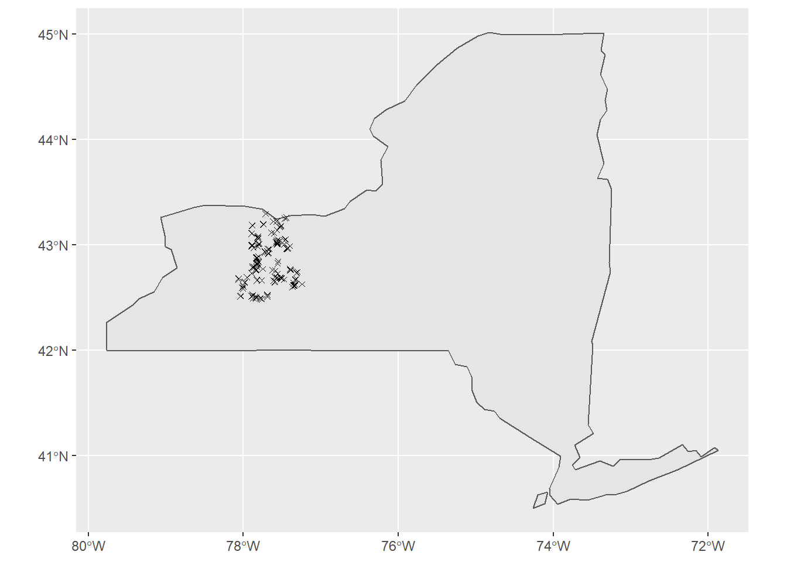
Generating Boosted Regression Tree to Find Predictors for SDM
Data for Logistic Regression: At the sites shown above, the soil, climatic, vegetative, and topographic data was put into the BRT to assess which factors were most significant in predicting power for the model.
Boosted Regression Codes:
#Load in Libraries
library(tidyverse)
library(stats)
library(gbm)
library(dismo)
#Read in Data
Buckthorn_All_Sites <- read.csv("All_Sites.csv")
#Calculate Boosted Regression Tree Using all Variables to see which are the best predictors
#Run the BRT
Boosted_Regression<- gbm.step(data=Buckthorn_All_Sites, gbm.x = 3:34, gbm.y = 2,
family = "gaussian", tree.complexity = 5,
learning.rate = 0.001, bag.fraction = 0.5)##
##
## GBM STEP - version 2.9
##
## Performing cross-validation optimisation of a boosted regression tree model
## for Buckthorn and using a family of gaussian
## Using 149 observations and 32 predictors
## creating 10 initial models of 50 trees
##
## folds are unstratified
## total mean deviance = 0.1211
## tolerance is fixed at 1e-04
## ntrees resid. dev.
## 50 0.122
## now adding trees...
## 100 0.1214
## 150 0.1209
## 200 0.1204
## 250 0.1201
## 300 0.1198
## 350 0.1195
## 400 0.1191
## 450 0.1189
## 500 0.1185
## 550 0.1183
## 600 0.1182
## 650 0.118
## 700 0.1179
## 750 0.1177
## 800 0.1176
## 850 0.1175
## 900 0.1173
## 950 0.1173
## 1000 0.1173
## 1050 0.1174
## 1100 0.1174
## 1150 0.1173
## 1200 0.1172
## 1250 0.1173
## 1300 0.1173
## 1350 0.1174
## 1400 0.1174
## 1450 0.1174
## 1500 0.1173
## 1550 0.1175
## 1600 0.1175
## 1650 0.1176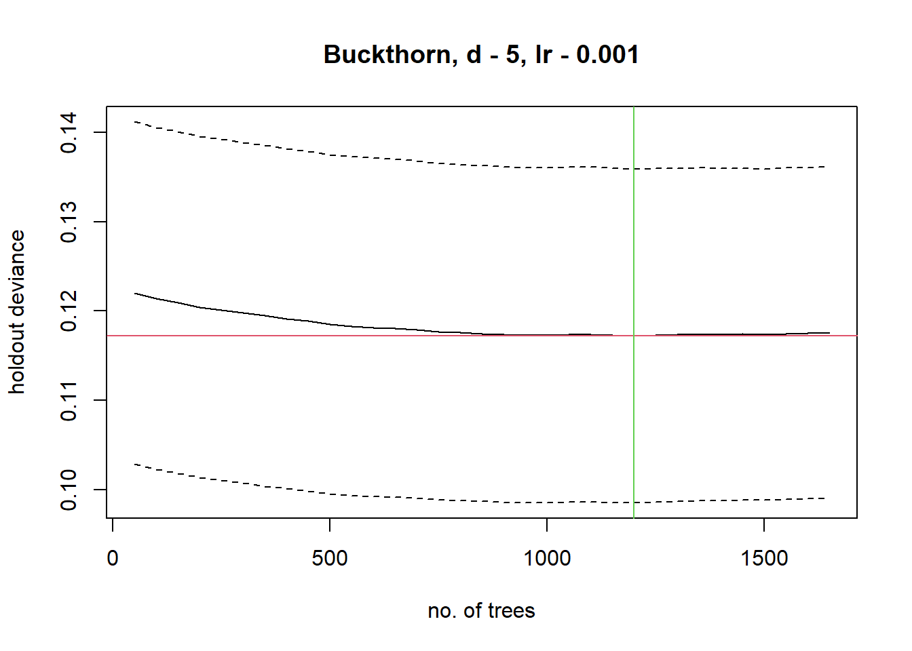
##
## mean total deviance = 0.121
## mean residual deviance = 0.087
##
## estimated cv deviance = 0.117 ; se = 0.019
##
## training data correlation = 0.704
## cv correlation = 0.244 ; se = 0.076
##
## elapsed time - 0.16 minutes#Note that gbm.x shows which are the independent variables and gbm.y is the dependent variable which is the presence or absence of Common Buckthorn Generating Linear Regressions to See What Effects Buckthorn’s Relative Abundance in Site
Data for Linear Regression: In order to add depth to the study, I gathered additional variables of Buckthorn’s relative abundance within sites as well as predictive variables such as earthworm abundance, canopy light, and edge effects.
-Note this is an additional test to not only create a habitat suitability model of buckthorn, but to also see what environmental variable increases abundance
Linear Regression Code:
#Load in the Libraries
library(tidyverse)
library(stats)
#Read in Data that contains only "invaded" sites
Buckthorn_only <- read.csv("Buckthorn_only.csv")
#Create Linear Model using what variables are believed to be best
Buckthorn <- lm(formula = X.Buckthorn~nonveg.100+Canopy.Cover+Worms+N+GR.0.25+temp0509, data= Buckthorn_only)Background: In order to generate a habitat suitability SDM that maps out probability of presence it requires 2 parts; 1. environmental variables and 2. presence data.
Environmental Data for Predictive Model: The data to generate the SDM came from 3 sources. 1. Precipitation and Temperature from PRISM 2. Topography from USGS digital elevation maps 3. Land Use and Land Cover from the USGS
Presence Data: The occurrence data of Buckthorn came from two open sources as well as from my own field data.
Open Sources: iNaturalist and iMapInvasives
Reading in Open Source Data
#Load Libraries
library(sp)
library(sf)
library(spData)
library(raster)
library(maptools)
library(rgdal)
library(dismo)
library(tidyverse)
library(FedData)
library(viridis)
#Read in Occurrence data from csv and transform to NAD83 Projection
Occurence <- read.csv("Buckthorn_Occurence.csv")%>%
st_as_sf(coords= c("longitude","latitude"),crs= "+proj=longlat +datum=WGS84 +no_defs")%>%
st_transform(crs= "+proj=longlat +datum=NAD83 +no_defs")
#Set NY Boundaries
data(us_states)
NY= us_states[us_states$NAME == "New York",]
#Filter Out Occurrences that had incorrect lat+long that put them outside of NY
Occurence<-filter(Occurence, st_contains(NY,Occurence,sparse=F))%>%
st_as_sf(coords= c("longitude","latitude"),crs= "+proj=longlat +datum=WGS84 +no_defs")%>%
st_transform(crs= "+proj=longlat +datum=NAD83 +no_defs")
#Load Prism Precip
Prism<-raster("PRISM/PRISM_ppt_30yr_normal_800mM2_annual_bil.bil")
Precip_crop<-crop(x = Prism, y = NY)%>%mask(mask=NY)
plot(Precip_crop)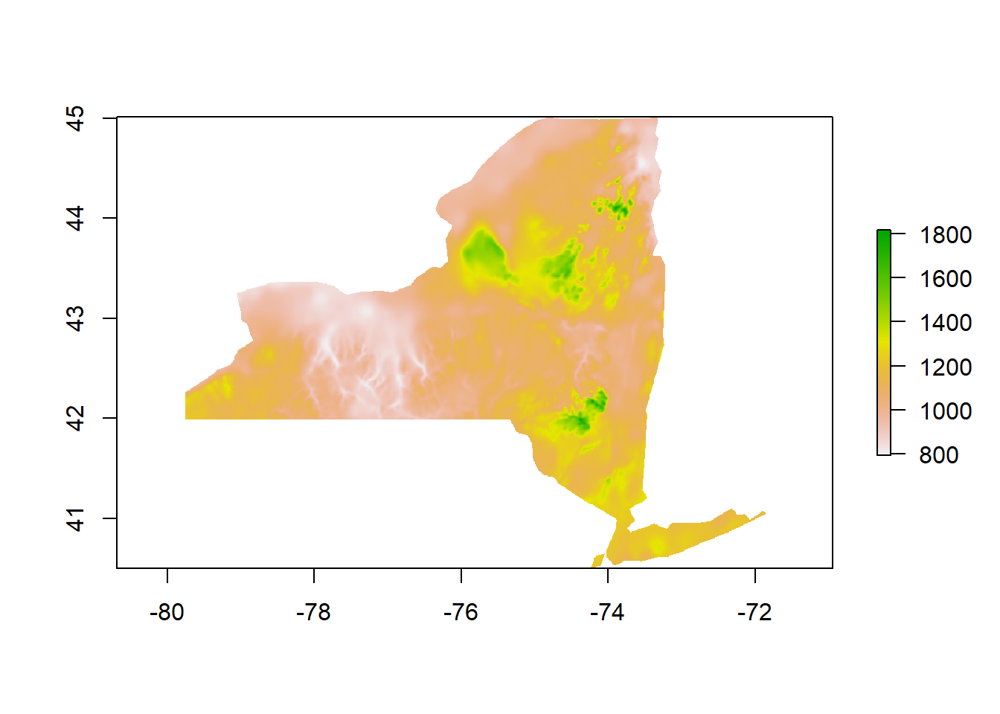
#Load Prism Temp
Temp<-raster("PRISM/PRISM_tmean_30yr_normal_800mM2_annual_bil.bil")
Temp_crop<-crop(x = Temp, y = NY)%>%mask(mask=NY)
plot(Temp_crop)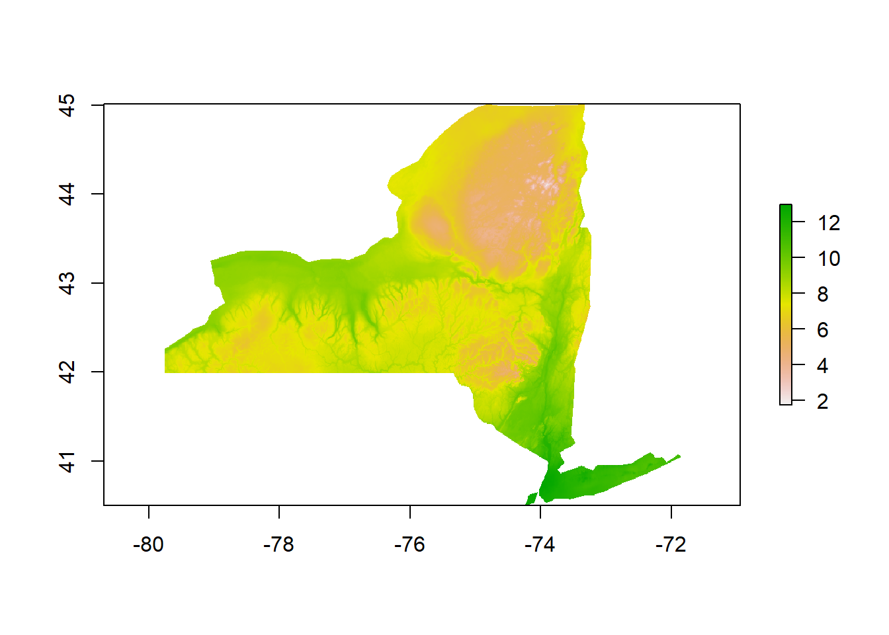
extent<-extent(Temp_crop)
#Read in NLCD and Reproject to NAD83
NLCD<- raster("NLCD/gaplf2011lc_v30_ny.tif")
NLCDresampled <- projectRaster(NLCD,Temp_crop,method = 'ngb')
NLCD_crop<-crop(x=NLCDresampled, y=NY)%>%mask(mask=NY)
plot(NLCD_crop)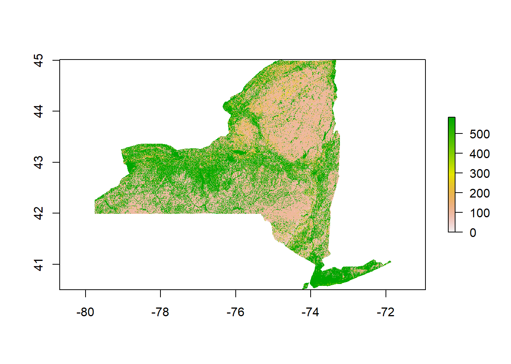
#Read in NED
DEM1<- raster("Elevation/DEM1.tif")
DEM2<- raster("Elevation/DEM2.tif")
DEM3<- raster("Elevation/DEM3.tif")
DEM4<- raster("Elevation/DEM4.tif")
DEM5<- raster("Elevation/DEM5.tif")
DEM6<- raster("Elevation/DEM6.tif")
DEM7<- raster("Elevation/DEM7.tif")
DEM8<- raster("Elevation/DEM8.tif")
DEM9<- raster("Elevation/DEM9.tif")
DEM10<- raster("Elevation/DEM10.tif")
DEM11<- raster("Elevation/DEM11.tif")
DEM12<- raster("Elevation/DEM12.tif")
DEM13<- raster("Elevation/DEM13.tif")
DEM14<- raster("Elevation/DEM14.tif")
DEM15<- raster("Elevation/DEM15.tif")
DEM16<- raster("Elevation/DEM16.tif")
DEM17<- raster("Elevation/DEM17.tif")
DEM18<- raster("Elevation/DEM18.tif")
DEM19<- raster("Elevation/DEM19.tif")
DEM20<- raster("Elevation/DEM20.tif")
DEM21<- raster("Elevation/DEM21.tif")
DEM22<- raster("Elevation/DEM22.tif")
DEM23<- raster("Elevation/DEM23.tif")
DEM24<- raster("Elevation/DEM24.tif")
DEM25<- raster("Elevation/DEM25.tif")
DEM26<- raster("Elevation/DEM26.tif")
DEM27<- raster("Elevation/DEM27.tif")
#Merge All NY Tiles Together and Reproject into NAD83
DEM<-merge(DEM1,DEM2,DEM3,DEM4,DEM5,DEM6,DEM7,DEM8,DEM9,DEM10,DEM11,DEM12,DEM13,DEM14,DEM15,DEM16,DEM17,DEM18,DEM19,DEM20,DEM21,DEM22,DEM23,DEM24,DEM25,DEM26,DEM27)
DEMresampled<-projectRaster(DEM,Temp_crop,method= 'ngb')
DEM_crop<-crop(x=DEMresampled, y=NY)%>%mask(mask=NY)
plot(DEM_crop)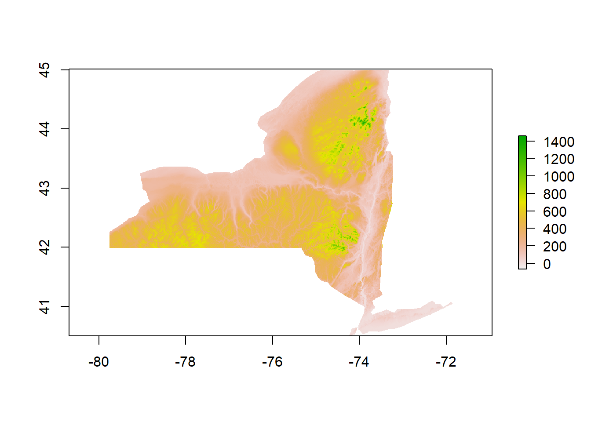
#Make a raster stack of environmental data
bioclim.data<-stack(x = Temp_crop, Precip_crop,NLCD_crop,DEM_crop)
bioclim.data <- crop(x = bioclim.data, y = NY)%>%mask(mask=NY)Coding to Generate Initial Habitat Suitability Model:
#Add long+lat back into Occurrence
Occurence[,c("longitude","latitude")]= st_coordinates(Occurence)
#Begin to build distribution model
bc.model <- bioclim(x = bioclim.data, p = st_coordinates(Occurence))
# Drop unused column
obs.data <- Occurence[, c("latitude", "longitude")]
# Build species distribution model
bc.model <- bioclim(x = bioclim.data, p = st_coordinates(obs.data))
# Reverse order of columns
obs.data <- obs.data[, c("longitude", "latitude")]
# Build species distribution model
bc.model <- bioclim(x = bioclim.data, p = st_coordinates(obs.data))
#Predict estimated presence
predict.presence <- dismo::predict(object = bc.model,
x = bioclim.data,
ext = NY)
#Make Predict Presence a data frame for ggplot 2
prediction<-as.data.frame(predict.presence, xy=TRUE)
#Plot it
ggplot(NY,col = "grey95")+
geom_sf()+
geom_sf(data=Occurence, size=1, color="black")+
geom_raster(data=prediction, aes(x = x, y = y, fill= layer), alpha=.65)+
scale_fill_gradientn(colours = terrain.colors(7))+
ggtitle("Buckthorn SDM Training Data")+
xlab("longitude")+
ylab("latitude")+
theme(plot.title = element_text(hjust = 0.5))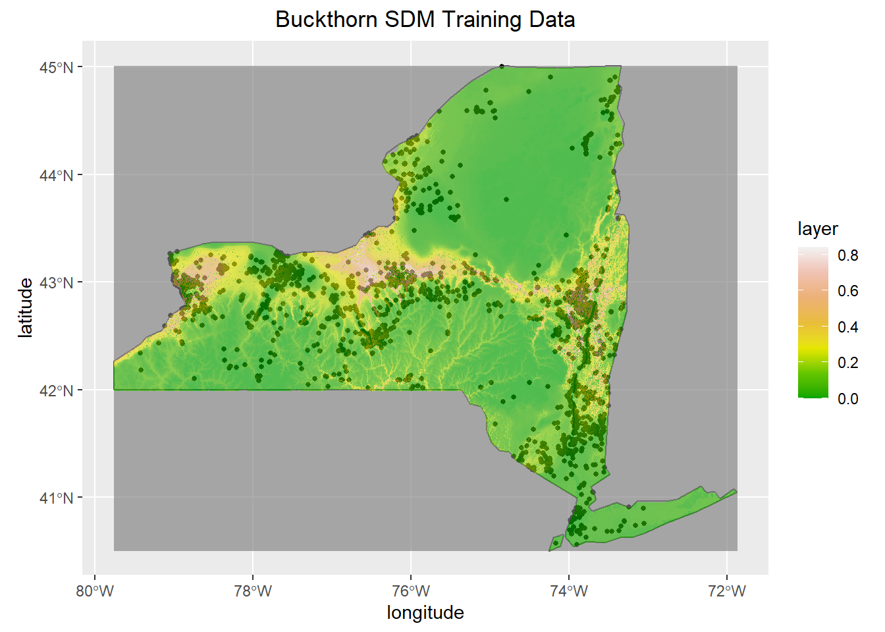
Coding to Fine Tune and Test the Final Model:
#Create Pseudo Absence Points based upon resolution of climatic data
bil.files <- list.files(path = "PRISM/",
pattern = "*.bil$",
full.names = TRUE)
resolution <- raster(bil.files[3])
mask<- crop(x = resolution, y = NY)%>%mask(mask=NY)
set.seed(20210707)
#Insert Random Points
background <- randomPoints(mask = mask,
n= nrow(obs.data),
ext = NY,
extf = 1.25)
#Save rando points as data frame
Pseudo<- as.data.frame(background)
ggplot(NY,col = "grey95")+
geom_sf()+
geom_sf(data=Occurence, size=1, color="black")+
geom_raster(data=prediction, aes(x = x, y = y, fill= layer), alpha=.65)+
geom_point(data= Pseudo, aes(x = x, y = y))+
scale_fill_gradientn(colours = terrain.colors(7))+
ggtitle("Pseudo Absence Points")+
xlab("longitude")+
ylab("latitude")+
theme(plot.title = element_text(hjust = 0.5))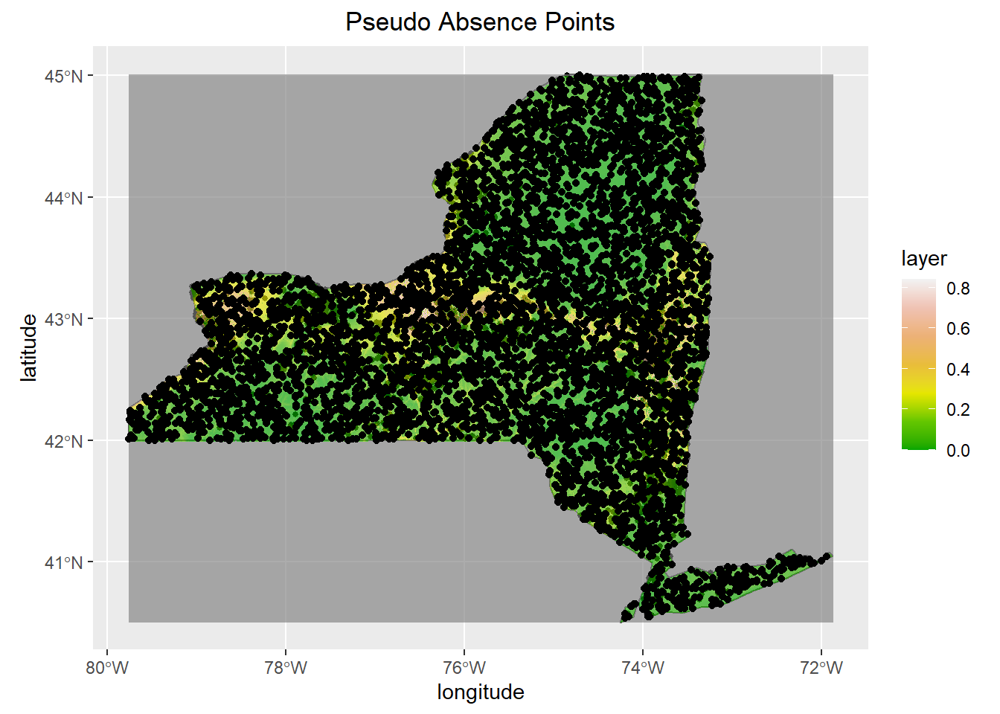
#Testing Time!
testing.group <- 1
group.presence <- kfold(x = obs.data, k = 5)
#This sets equal groups
#Set Training and Testing Groups
presence.train <- obs.data[group.presence != testing.group, ]
presence.test <- obs.data[group.presence == testing.group, ]
#Training and testing for pseudo points
group.background <- kfold(x = background, k = 5)
background.train <- background[group.background != testing.group, ]
background.test <- background[group.background == testing.group, ]
#Build model using training
bc.model <- bioclim(x = bioclim.data, p = st_coordinates(presence.train))
predict.presence <- dismo::predict(object = bc.model,
x = bioclim.data,
ext = NY)
predict.presence_df<- as.data.frame(predict.presence, xy=TRUE)
#Testing and Evaluation
bc.eval <- evaluate(p = presence.test, # The presence testing data
a = background.test, # The absence testing data
model = bc.model, # The model we are evaluating
x = bioclim.data) # Climatic variables for use by modelsummary(Boosted_Regression)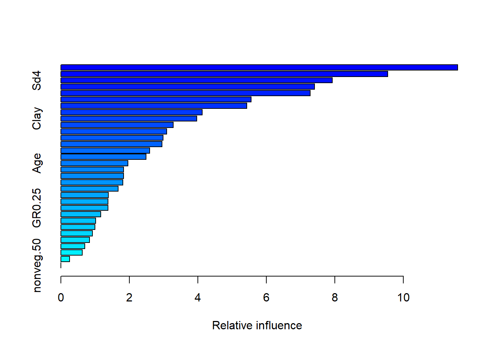
## var rel.inf
## terrain.cti terrain.cti 11.5891985
## soil.hyd.cond soil.hyd.cond 9.5479940
## Sd4 Sd4 7.9259167
## prec0509 prec0509 7.4058631
## pH pH 7.2848381
## depthrestrictive depthrestrictive 5.5545717
## bulkdensity bulkdensity 5.4321929
## nonveg.100 nonveg.100 4.1336965
## Clay Clay 3.9695508
## temp0509 temp0509 3.2846220
## aws100cm aws100cm 3.0916035
## terrain.slope terrain.slope 2.9859545
## Sd2 Sd2 2.9547522
## N N 2.5960254
## Silt Silt 2.4894625
## Age Age 1.9581256
## Sd3 Sd3 1.8311469
## LOI LOI 1.8292024
## N.Patches500 N.Patches500 1.8078724
## Depth Depth 1.6741893
## Sd1 Sd1 1.3867552
## trees.veg100 trees.veg100 1.3781866
## GR0.25 GR0.25 1.3755050
## GR0.50 GR0.50 1.1604439
## Sand Sand 1.0201409
## trees.veg50 trees.veg50 0.9914739
## deer.take deer.take 0.9208591
## P P 0.8386191
## soil.erod.kffact soil.erod.kffact 0.6972556
## drainageclass drainageclass 0.6284127
## GR1.00 GR1.00 0.2555689
## nonveg.50 nonveg.50 0.0000000summary(Buckthorn)##
## Call:
## lm(formula = X.Buckthorn ~ nonveg.100 + Canopy.Cover + Worms +
## N + GR.0.25 + temp0509, data = Buckthorn_only)
##
## Residuals:
## Min 1Q Median 3Q Max
## -0.28846 -0.11542 0.01336 0.06639 0.35594
##
## Coefficients:
## Estimate Std. Error t value Pr(>|t|)
## (Intercept) -2.246227 1.450080 -1.549 0.156
## nonveg.100 0.003845 0.005546 0.693 0.506
## Canopy.Cover 0.020174 0.011554 1.746 0.115
## Worms -0.001269 0.001622 -0.783 0.454
## N -0.003802 0.011330 -0.336 0.745
## GR.0.25 0.264712 0.515056 0.514 0.620
## temp0509 0.120185 0.128355 0.936 0.374
##
## Residual standard error: 0.2383 on 9 degrees of freedom
## Multiple R-squared: 0.4098, Adjusted R-squared: 0.01641
## F-statistic: 1.042 on 6 and 9 DF, p-value: 0.4587ggplot(Buckthorn_only, aes(x= Canopy.Cover, y= X.Buckthorn))+
geom_point()+
geom_smooth(method=lm, span=0.5)+
ggtitle("Canopy Cover Impact on Buckthorn")+
theme(plot.title = element_text(hjust = 0.5))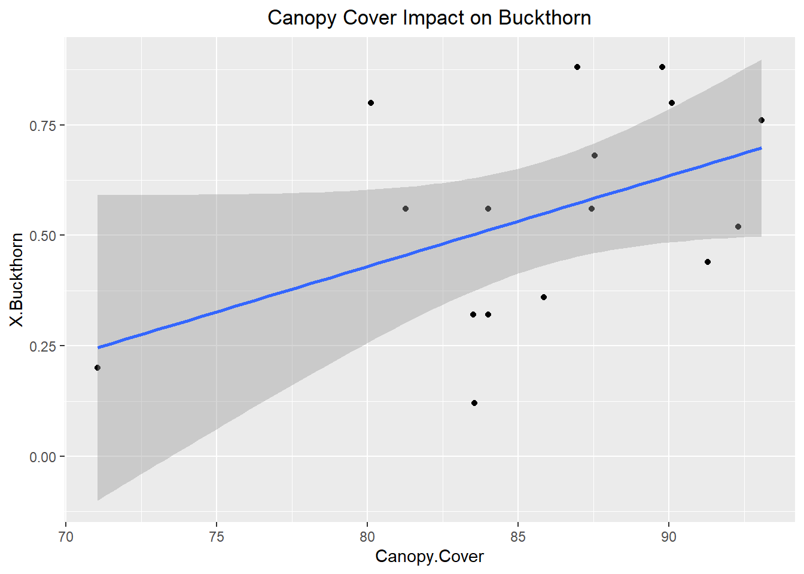
ggplot(Buckthorn_only, aes(x= temp0509, y= X.Buckthorn))+
geom_point()+
geom_smooth(method=lm, span=0.5)+
ggtitle("Temperature Impact on Buckthorn")+
theme(plot.title = element_text(hjust = 0.5))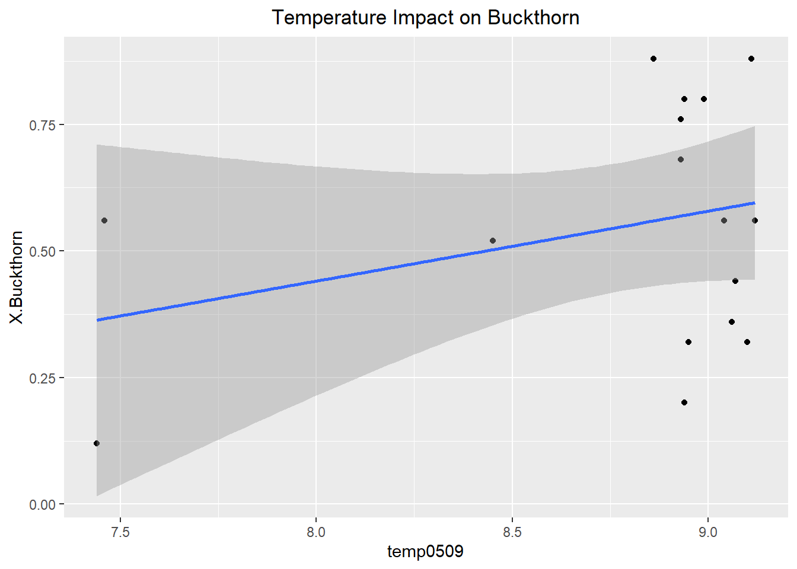
ggplot(Buckthorn_only, aes(x= Worms, y= X.Buckthorn))+
geom_point()+
geom_smooth(method=lm, span=0.5)+
ggtitle("Earthworm Impact on Buckthorn")+
theme(plot.title = element_text(hjust = 0.5))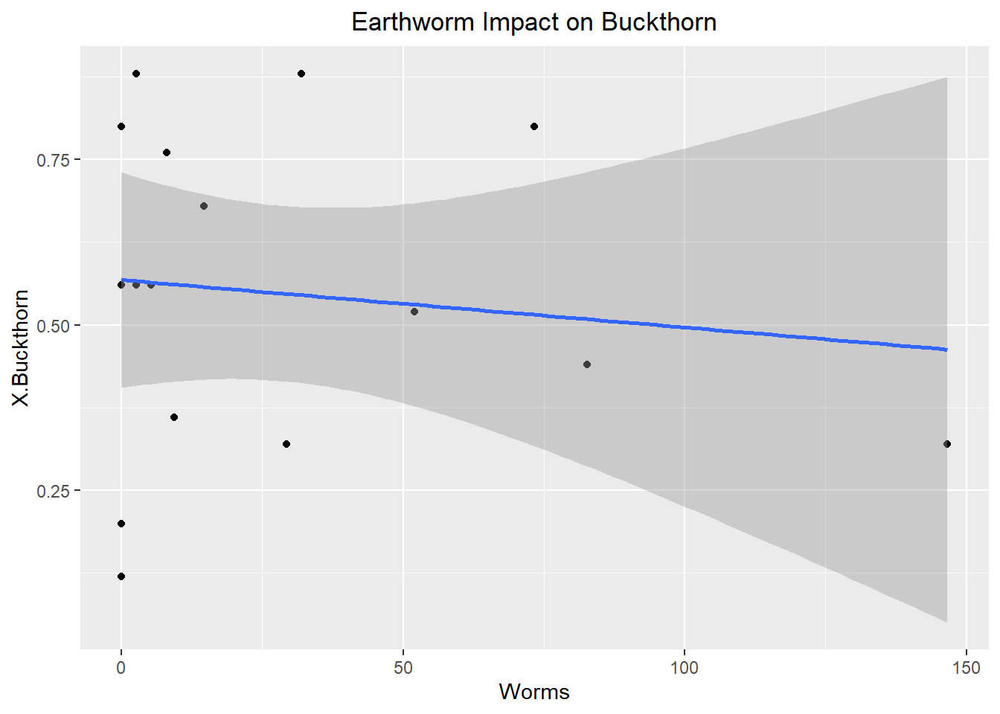
ggplot(NY,col = "grey95")+
geom_sf()+
geom_sf(data=Occurence, size=1, color="black")+
geom_raster(data=predict.presence_df, aes(x = x, y = y, fill= layer), alpha=.65)+
scale_fill_viridis(option="magma")+
ggtitle("Buckthorn SDM of NY")+
xlab("longitude")+
ylab("latitude")+
theme(plot.title = element_text(hjust = 0.5))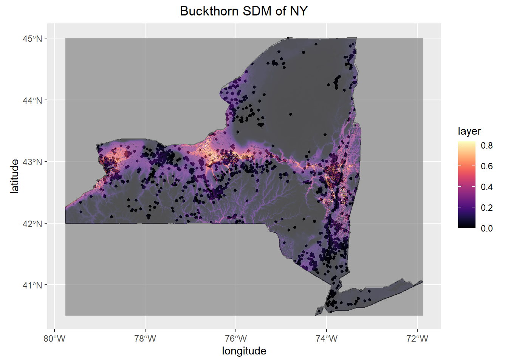 ## Model AUC Score
head(bc.eval@auc)## [1] 0.7802242Looking at the boosted regression tree, there was an average of 1,400 trees generated with a training score that hovered around 0.691-0.724 (Please Note these values change per run as it is machine learning). Typically the accepted standard score is that greater than 0.800, therefore further variables must be implemented to increase predictor accuracy. Following the ideas of Golivets et al. 2019, land cover, elevation, slope, defoliation from other invasive species, and proximity to roads and cities should be used to show a mix of invasibility and dispersal factors which may better explain Buckthorn presence. However, using the variables that contribute most to the model there is an apparent trend that most of the explanatory variables are correlated with soil properties and topography indicating an importance of drainage characteristics. Ultimately, the most important variables specifically were terrain.cti (10-12.1 relative influence) which describes how topography controls hydrologic processes, soil.hy.cond (between 9-10.15 relative influence) which is the hydraulic conductivity, and finally pH (6.6-7.8 relative influence) and precipitation (6.8-7.4 relative influence).
The best variables determining relative abundance within sites were Earth Worm Abundance, Canopy Coverage, and Temperature. Unfortunately, none of the variables were statistically significant as they had p-values of 0.454, 0.115, and 0.374 respectively. Typically below 0.05 is considered significant. However, despite the lack of statistically significant results this is very informative about what controls the relative abundance of buckthorn. While these variables observed are more along the approach of habitat suitability perhaps it is rather dispersal ability that determines relative abundance instead. For instance, in the future a study should be conducted which takes into account the relative abundance of bird and rodent species within a forest as those frugivorous birds and rodents determine the germination of Buckthorn seeds. This is likely to yield better results as the Buckthorn drupes must be broken in order for the seed to begin germination, hence the importance of dispersal. Furthermore, a future study such as this would help build an example of invasional meltdown where certain invasive European bird species such as European starling relative abundance in a forest could be correlated with a higher abundance of Buckthorn.
In the current state of the habitat suitability SDM there are 4 raster layers to predict the probability of Buckthorn’s Occurrence. The current accuracy of the model has an AUC (Area Under the Curve) of 0.780. This accuracy is considered typical as generally greater than 0.800 is deemed to be significant. While this model is a great start further variables will need to be added to increase the accuracy. Looking at areas where the model misses I believe that certain measures of anthropogenic influence will need to be added such as distance to farms, nearest city, or roads as Buckthorn was used ornamentally in the 1800’s. Furthermore, as predicted from the boosted regression tree soil properties play a large role in determining where Buckthorn is present so incorporating SSURGO data will greatly improve the accuracy of the model as well. Thus far, this model shows that Buckthorn prefers the warmer, drier, lowland areas of New York.
Endicott S, Drescher M, and Brenning A. 2017. Modelling the spread of European buckthorn in the Region of Waterloo. Biol Invasions 19: 2993–3011.
Elith, J., Leathwick, J.R., and Hastie, T. 2008. Boosted regression trees - a new technique for modelling ecological data. Journal of Animal Ecology
Golivets, M., C. W. Woodall, and K. F. Wallin. 2019. Functional form and interactions of the drivers of understory non‐native plant invasions in northern us forests. Journal of Applied Ecology 56:2596–2608.
Heimpel, G. E., L. E. Frelich, D. A. Landis, K. R. Hopper, K. A. Hoelmer, Z. Sezen, M. K. Asplen, and K. Wu. 2010. European buckthorn and Asian soybean aphid as components of an extensive invasional meltdown in North America. Biological Invasions 12:2913–2931.
Klionsky SM, Amatangelo KL, and Waller DM. 2011. Above- and Belowground Impacts of European Buckthorn (Rhamnus cathartica) on Four Native Forbs. Restoration Ecology 19: 728–37.
Knight KS, Kurylo JS, Endress AG, et al. 2007. Ecology and ecosystem impacts of common buckthorn (Rhamnus cathartica): a review. Biol Invasions 9: 925–37.
Oliver, J. 2021, July 7. https://jcoliver.github.io/learn-r/011-species-distribution-models.html.
Warren, R. J., A. Labatore, and M. Candeias. 2017. Allelopathic invasive tree (Rhamnus cathartica) alters native plant communities. Plant Ecology 218:1233–1241.